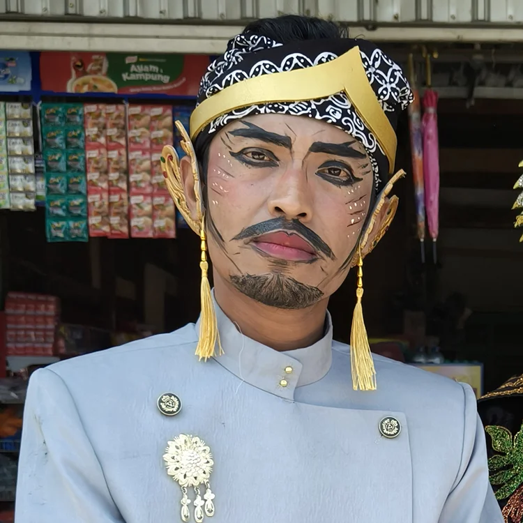
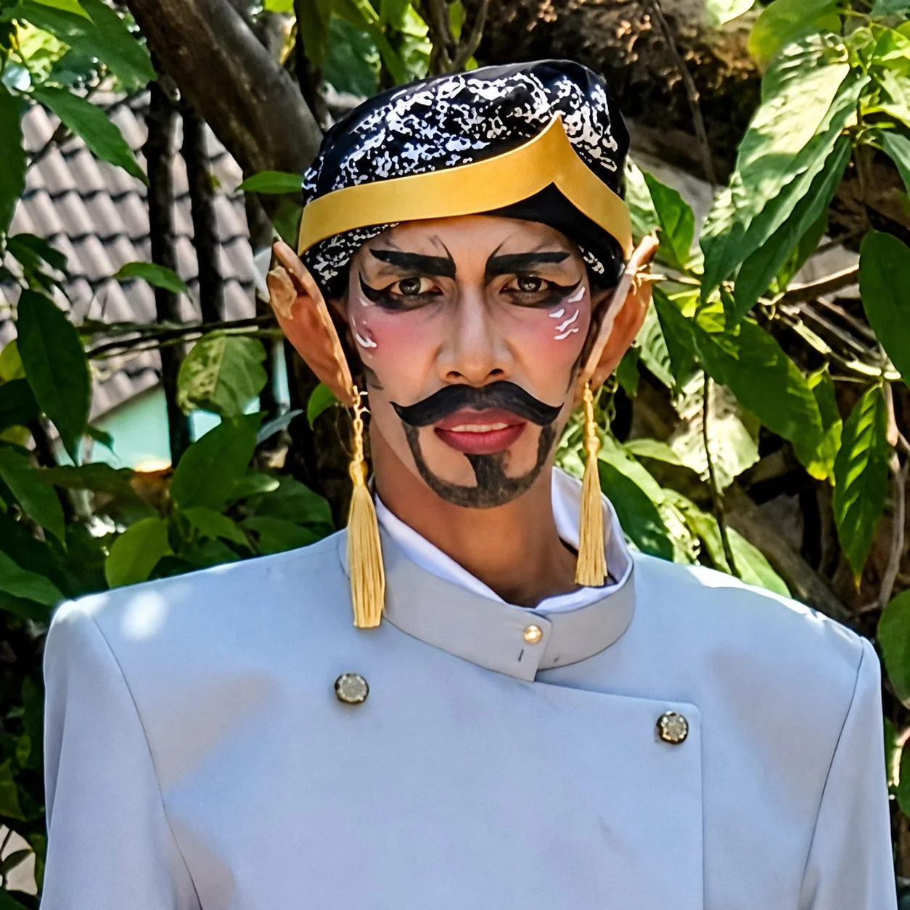
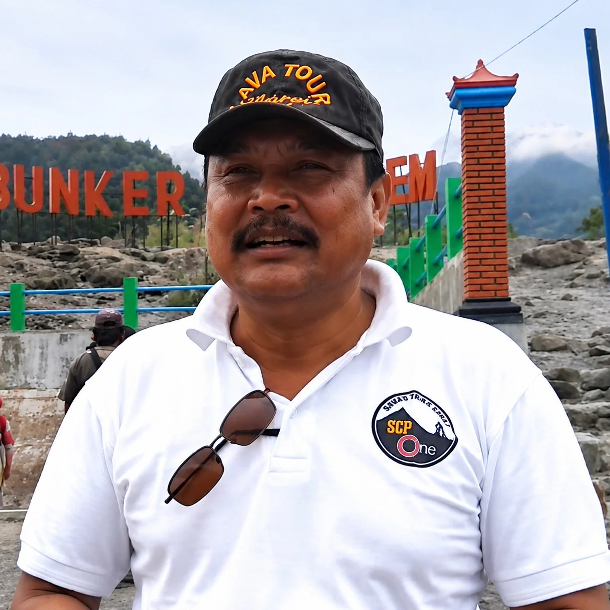
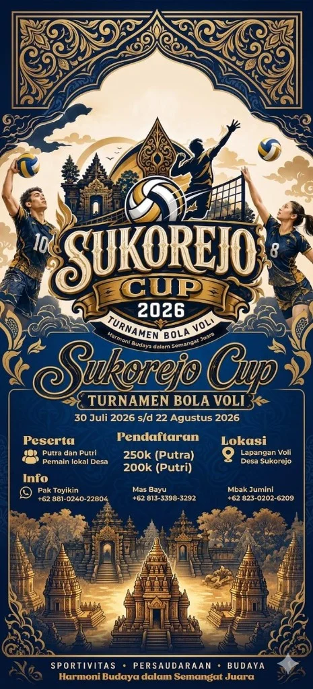

Selamat Datang di
Kampung Jawa adalah Budaya Tradisi Destinasi
Tentang Kampung Jawa Sukorejo
Sejarah & Filosofi
Kampung Jawa Sukorejo adalah sebuah desa wisata yang didedikasikan untuk melestarikan dan memperkenalkan kekayaan budaya Jawa. Kami menawarkan pengalaman otentik kehidupan pedesaan dengan sentuhan tradisi yang kental.
Jelajahi keindahan alam kami, ikuti berbagai workshop kerajinan, dan nikmati pertunjukan seni yang memukau. Kami percaya bahwa budaya adalah warisan yang harus dijaga bersama.

Solikin, S.Pd
Ketua Pokdarwis

Syaiful Amin, S.Pd
Ketua Unit Wisata

H. Pasidi Shidiq S.Kep, Ns. M.Kes
Ketua BUMDes
Kenapa berkunjung?
Wisata budaya yang hidup bersama warga
KJS bukan hanya tempat melihat pertunjukan. Pengunjung diajak ikut belajar, berbincang dengan pelaku seni, merasakan suasana desa, dan membawa pulang pengalaman yang dekat dengan akar budaya Jawa.
Bandingkan PaketBelajar langsung
Karawitan, tari, bahasa Jawa, pedalangan, dan kuliner dipandu oleh penggiat lokal.
Ramah rombongan
Cocok untuk sekolah, komunitas, keluarga, dan tamu yang ingin pengalaman edukatif.
Homestay warga
Pilihan paket menginap membuat pengalaman desa terasa lebih hangat dan personal.
Tradisi tahunan
Festival, Manganan, dan Sandur menjadi ruang temu budaya yang terus dirawat.
Paket Wisata Budaya KJS
Jelajahi kekayaan budaya Jawa bersama kami melalui berbagai kegiatan seni, tradisi, dan kearifan lokal yang otentik. Kami menawarkan tiga pilihan paket yang dapat disesuaikan dengan kebutuhan Anda.
Sinau Sedino
(Belajar Sehari)
Mulai dari Rp 50.000
Rasakan langsung esensi seni Jawa dalam satu hari. Pilih duniamu: alunan gamelan, gemulai tarian, atau cita rasa kuliner warisan. Pengalaman singkat yang tak terlupakan.
Lihat DetailNgleluri Budaya
(Melestarikan Budaya)
Mulai dari Rp 150.000
Menyelam lebih dalam ke jantung tradisi. Dari workshop seni hingga pertunjukan magis di malam hari dan menginap bersama warga. Jadilah bagian dari cerita kami.
Lihat DetailPusaka Jawi
(Pusaka Jawa)
Mulai dari Rp 250.000
Pengalaman paling otentik dan paripurna. Kuasai semua seni, saksikan semua pertunjukan, dan hiduplah layaknya warga desa. Ini bukan sekadar wisata, ini adalah perjalanan jiwa.
Lihat DetailAcara & Kegiatan Unggulan
Setiap
TahunSebagai puncak pesta seni masyarakat, FSS adalah wujud sinergi dan gotong royong warga dalam melestarikan budaya. Festival ini menampilkan berbagai kesenian lokal unggulan seperti Sandur, Gendruwon Ayon-ayon, Terbang Bancah, Pencak Dor, dan Langentoyo.
Desa Sukorejo, Parengan, Tuban
Terbuka untuk umum
Setiap
HariBelajar langsung dari para ahli tentang Karawitan, Tari, Bahasa Jawa, Pedalangan, hingga Gastronomi khas pedesaan.
Sanggar KJS
Termasuk dalam paket
Galeri KJS
Cuplikan kegiatan budaya
Beberapa momen dari kegiatan seni, tradisi, kuliner, dan pembelajaran budaya di Kampung Jawa Sukorejo.
Panduan cepat
Cara merencanakan kunjungan
Untuk rombongan sekolah, komunitas, keluarga, atau tamu umum, tim KJS dapat membantu menyesuaikan kegiatan, durasi, dan kebutuhan konsumsi agar kunjungan berjalan nyaman.
Konsultasi KunjunganPilih paket atau kebutuhan
Tentukan ingin belajar singkat, menginap, atau mengikuti pengalaman budaya lengkap.
Hubungi admin KJS
Sampaikan jumlah peserta, tanggal kunjungan, usia peserta, dan kegiatan yang diminati.
Sesuaikan agenda
Tim KJS akan membantu menyusun alur kegiatan, konsumsi, pendamping, dan kebutuhan homestay.
Datang dan nikmati budaya
Peserta tinggal mengikuti arahan pemandu dan merasakan pengalaman budaya bersama warga.
Bantu pilih paket
Rekomendasi berdasarkan kebutuhan
Pilih pengalaman yang paling pas sebelum menghubungi admin.
Rombongan sekolah
Mulai dari Sinau Sedino untuk kunjungan edukasi singkat yang padat dan mudah diatur.
Lihat paketKomunitas budaya
Ngleluri Budaya cocok untuk belajar lebih dalam, menonton pertunjukan, dan menginap bersama warga.
Lihat paketPengalaman lengkap
Pusaka Jawi untuk tamu yang ingin merasakan rangkaian seni, tradisi, dan kehidupan desa secara utuh.
Lihat paketKabar & Aktivitas
Berita & Kabar Terbaru
Ikuti perkembangan kegiatan dan acara budaya terbaru di Kampung Jawa Sukorejo

Bukan Sekadar Turnamen, Sukorejo Cup 2026 Pererat Persaudaraan Warga
Semangat olahraga dan budaya akan berpadu dalam ajang Sukorejo Cup 2026, turnamen bola voli yang akan digelar di Lapangan Voli Desa Sukorejo...
Baca SelengkapnyaKelas Karawitan Remaja KJS Kembali Dibuka
Upaya melestarikan seni musik gamelan terus berlanjut. KJS secara resmi membuka angkatan baru untuk kelas karawitan gratis khusus anak-anak dan remaja...
Baca SelengkapnyaKunjungan Studi Banding Desa Wisata Luar Daerah
Kampung Jawa Sukorejo menerima kunjungan hangat dari rombongan pengelola desa wisata Jawa Tengah untuk bertukar pikiran mengenai pengelolaan sanggar budaya...
Baca SelengkapnyaFAQ
Pertanyaan yang sering ditanyakan
Beberapa informasi dasar untuk membantu calon pengunjung sebelum memesan paket wisata.
Informasi & Pemesanan
Solikin, S.Pd
Ketua Pokdarwis
0852-3270-5259
Syaiful Amin, S.Pd
Ketua Unit Wisata Sukorejo
0858-1552-1922
H. Pasidi Shidiq S,Kep, Ns. M.Kes
Ketua Bumdes Sukorejo
0821-3197-0190
Kirim Pertanyaan
Punya pertanyaan? Kirim pesan langsung ke WhatsApp admin kami.